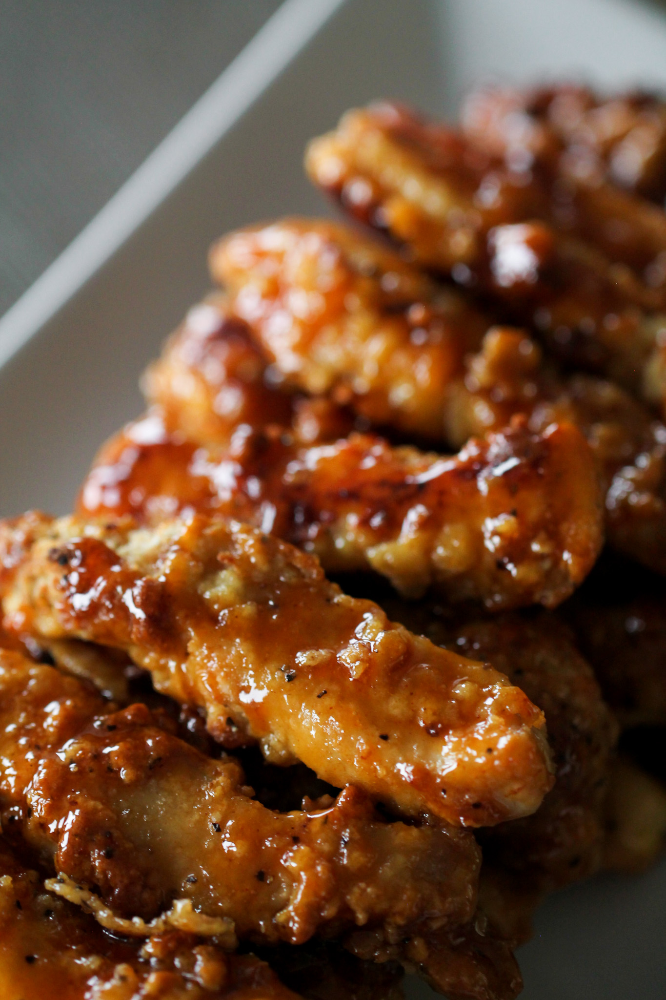

Sticky Fingers

Description
Try this macro friendly version of your favorite Sticky Fingers. All of the tang, but not all of the calories. Feel good about indulging in this treat.
Ingredients
Chicken Fingers:
- 1 1/2 pounds boneless skinless chicken breast, cut into strips
- 2 eggs
- 1 cup Kodiak Cakes Buttermilk Power Cakes Mix
- 1 teaspoon garlic powder
- 2 teaspoons salt
- 1 teaspoon pepper
Sauce:
- 1 cup brown sugar
- 3 Tablespoons buffalo wing sauce
- 2 Tablespoons water